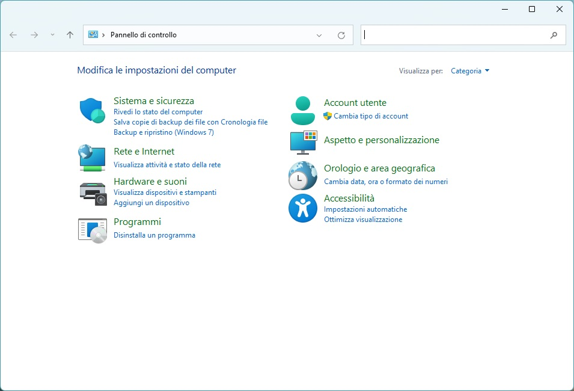
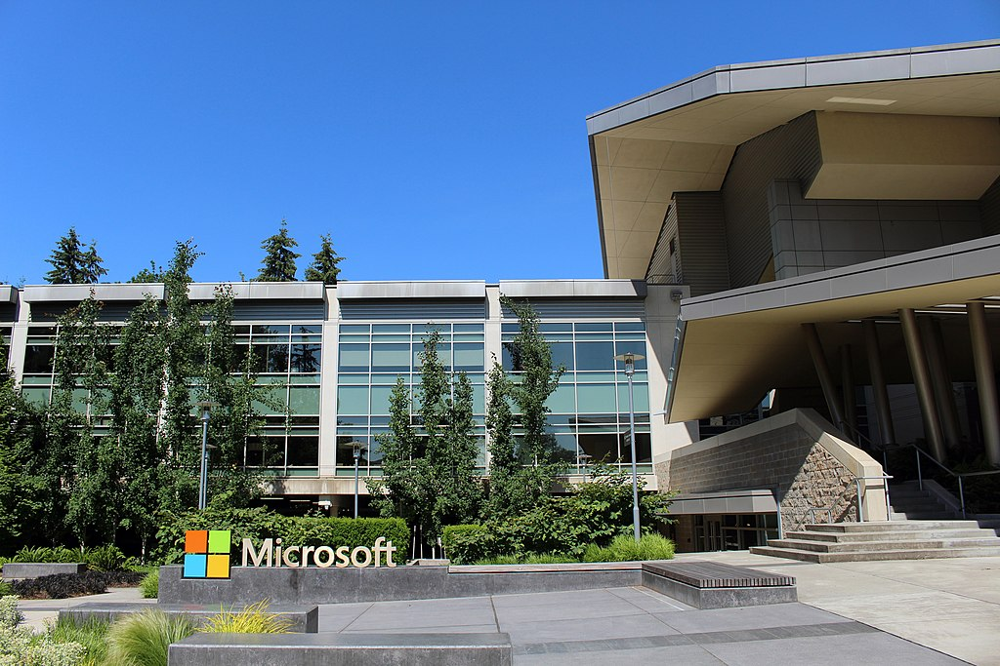
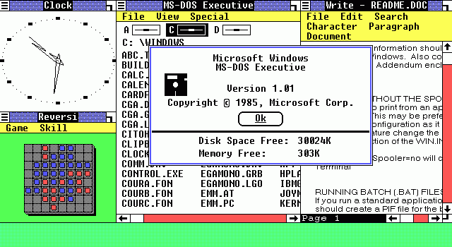
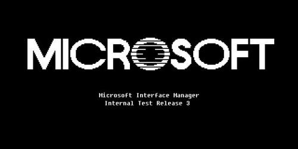
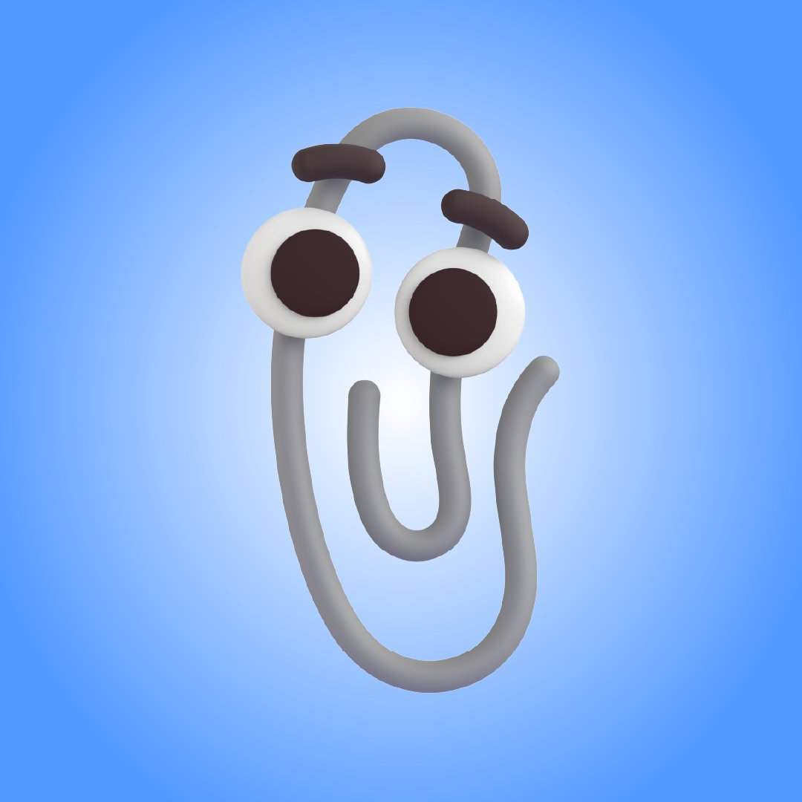
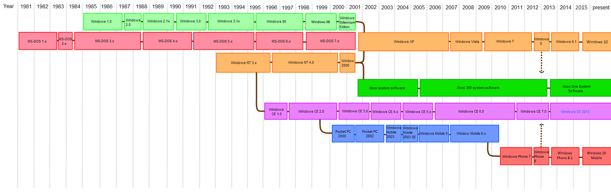
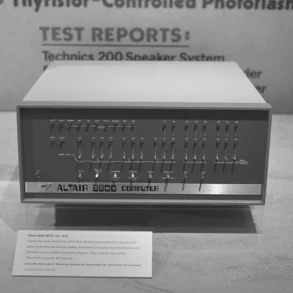
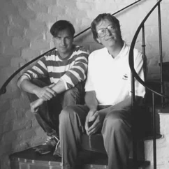

Storia di Windows
Sono passati più di 35 anni da quando Microsoft rivoluzionò l’informatica lanciando Windows 1.0. Da quel 20 novembre del 1985 si sono susseguite numerose versioni e interfacce utente che hanno accompagnato gli appassionati di computer. Ripercorriamo la storia del sistema operativo.
Windows sostituì MS-DOS (un sistema operativo monoutente e monotask con astrusi comandi). A differenza di quest’ultimo, l’OS Windows può essere controllato con il mouse e presenta un’interfaccia utente estremamente intuitiva. Gli elementi grafici potevano essere controllati con il mouse ed era possibile tenere aperti più software contemporaneamente.
La Microsoft ha modellato l'interfaccia utente, all'inizio conosciuta col nome Interface Manager, sulla base dei prototipi di interfaccia grafica sviluppati dalla Xerox, seguendo la strada intrapresa dalla Apple con il suo Macintosh, di cui Bill Gates ha potuto vedere un prototipo, mostratogli dallo stesso Steve Jobs nel 1981.
Nel 1987 è il turno di Windows 2.0, che guadagna leggermente in popolarità rispetto al suo predecessore. Windows 2.0 utilizza ancora il modello di memoria reale, che ha come limite l'uso di un massimo di un megabyte di memoria. In questa configurazione, Windows può essere eseguito all'interno di un altro sistema di multitasking, può funzionare in modalità protetta in autonomia, potendo così usare fino a 16 megabyte di memoria.
Nel 1990 Windows ottiene un deciso successo con la nuova versione 3.0, che oltre a funzionalità migliorate date alle applicazioni native, consente l'utilizzo dei programmi di MS-DOS con un multitasking migliore rispetto a Windows/386, grazie all'introduzione della memoria virtuale ed ai device driver virtuali (VxD) caricabili dinamicamente. Dopo il successo riscosso con Windows 3, la Microsoft rende il proprio sistema operativo ancora più rivolto verso l'interazione grafica, e crea un nuovo ambiente grafico chiamato Microsoft Bob.
Durante la seconda metà degli anni ottanta, la Microsoft e la IBM sviluppano congiuntamente il sistema operativo OS/2, quale successore del DOS, con lo scopo di sfruttare pienamente i vantaggi della summenzionata "modalità protetta".
Nei primi anni novanta l'alleanza tra la Microsoft e la IBM inizia a incrinarsi. Entrambe le aziende cooperano nello sviluppo dei sistemi operativi, e accedono al codice sorgente sviluppato da entrambi. La Microsoft decide di continuare lo sviluppo di Windows, mentre la IBM desidera proseguire solo con OS/2. L’OS, tra il 2015 e il 2020, è stato più volte aggiornato, introducendo tante piccole novità. L’interfaccia utente è estremamente curata, la barra delle applicazioni è stata ridisegnata e anche il Centro notifiche presenta diverse novità.
Una storia destinata a continuare: Microsoft si prepara a lanciare Windows 11, una nuova versione del popolare sistema operativo, aprendo nuove possibilità per l'innovazione tecnologica.
Bill Gates - fondatore principale Software Windows

Pannello di controllo Windows

Entrata Building 92, uno dei principali edifici di Microsoft a Redmond

Sistema operativo Windows 1.0 IBM

Interface Manager Windows

Clippy, la mascotte di Windows

Timeline modifiche sistema operativo

Windows 1.0 - primo sistema operativo

Altair 8800 - primo personal computer

Steve Jobs e Bill Gates